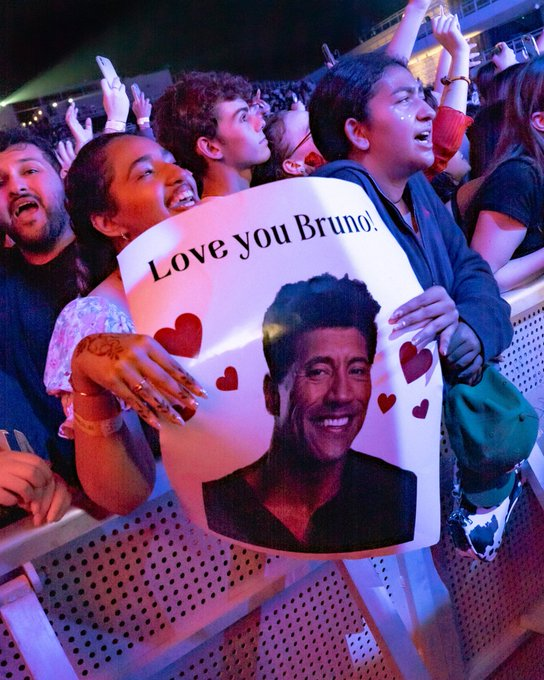
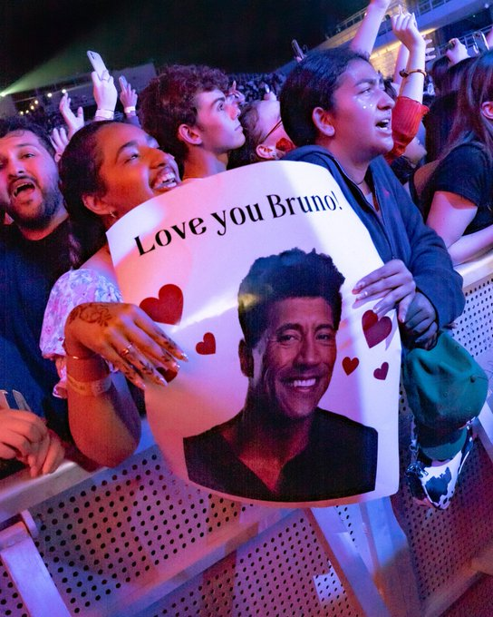
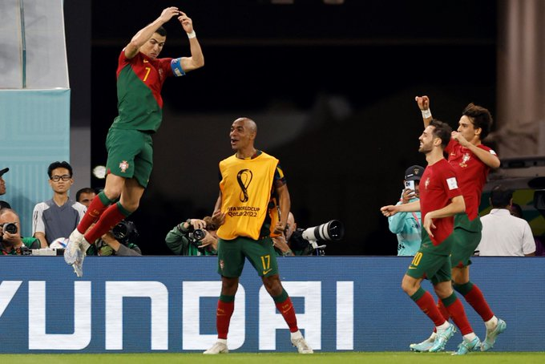

Bruno Mars @BrunoMars . 13h
Thank you Bahrain!

Bruno Mars @BrunoMars . 13h
Thank you Bahrain!
anime aesthetics @animesfeel . 17h
Same

What's Happening?

Fabrizo Romano.17h
@Cristiano Ronaldo . 119 goals with the Portuguese national team #Qatar2022
2:09 PM . May 5 2014
111.7K
5,144
Share